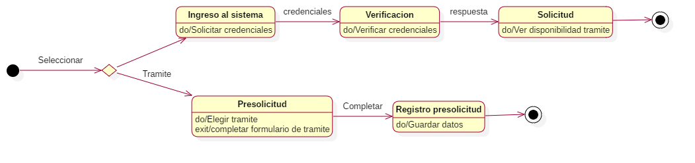

Diagramas
Diagramas General
Se dividieron los diagramas de estados para las dos partes del sistema total, es decir, la parte del sistema web y el sistema de escritorio.
Diagrama General de sistema web

Diagrama General de sistema de escritorio
Explicación
Nomenclatura
| Columna | Significado |
|---|---|
| Estado | Nombre del estado |
| Transición de entrada | Transición que se llevo acabo antes que se llegara al estado |
| Descripción estado | Breve descripción del estado |
| Transición de salida | Descripción de que ocurre para que finalize el estado y pase al siguiente |
Descripción de los estados del Diagrama General de Sistema Web
| Estado | Transición de entrada | Descripción estado | Transición de salida |
|---|---|---|---|
| Ingreso al Sistema | Ingreso pagina web. | Estado de acceso al sistema web, para consultar tramite o solicitar uno nuevo. | Se acepta el ingreso al sistema. |
| Verificación | Ingreso al sistema. | Verificación de los datos enviados como ingreso al sistema. | Se verifican los datos de entrada al sistema. |
| Solicitud | Verificación de los datos de entrada al sistema. | En el caso ideal después que se realiza la verificación el usuario procede a realizar la solicitud de tramite, ingresando todos los datos necesarios. | Se terminan de llenar los datos de la solicitud y se genera la misma. |
| PreSolicitud | Ingreso pagina web. | Estado alternativo al sistema en el que primero se realiza la PreSolicitud del tramite. | Se terminan de llenar los datos necesarios. |
Descripción de los estados del Diagrama General de Sistema de Escritorio
| Estado | Transición de entrada | Descripción estado | Transición de salida |
|---|---|---|---|